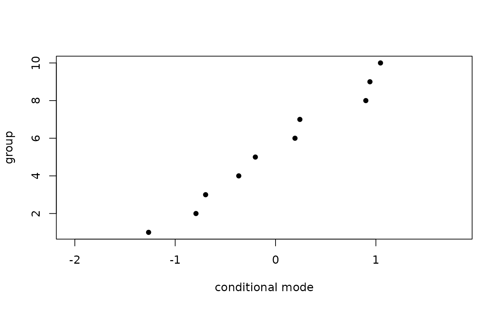

Extract random-effect modes
Value
A named list of levels-by-coefficients matrices, one per
random-effect term. as.data.frame() gives the long form (with a
condsd column when condVar = TRUE was used).
Examples
set.seed(1)
dd <- data.frame(x = rnorm(100), g = factor(rep(1:10, 10)))
dd$y <- rnorm(100, 1 + 0.5 * dd$x + rnorm(10, 0, 0.8)[dd$g], 1)
fit <- frm(bf(y ~ x + (1 | g)) + gaussian(), data = dd)
# one matrix per random-effect term, levels by coefficients
ranef(fit)
#> $1 | g
#> (Intercept)
#> 1 -0.7929115
#> 2 0.1938107
#> 3 -0.6968785
#> 4 -0.3665259
#> 5 -1.2649313
#> 6 1.0458808
#> 7 0.8996844
#> 8 0.2424397
#> 9 -0.2011950
#> 10 0.9405886
#>
# condVar adds the conditional SDs a caterpillar plot needs
re <- as.data.frame(ranef(fit, condVar = TRUE))
head(re)
#> grp term level condval condsd
#> 1 1 | g (Intercept) 1 -0.7929115 0.3795333
#> 2 1 | g (Intercept) 2 0.1938107 0.3736784
#> 3 1 | g (Intercept) 3 -0.6968785 0.3773146
#> 4 1 | g (Intercept) 4 -0.3665259 0.3788799
#> 5 1 | g (Intercept) 5 -1.2649313 0.3829424
#> 6 1 | g (Intercept) 6 1.0458808 0.3798946
with(re[order(re$condval), ],
plot(condval, seq_along(condval), pch = 16,
xlim = range(condval - 2 * condsd, condval + 2 * condsd),
xlab = "conditional mode", ylab = "group"))
